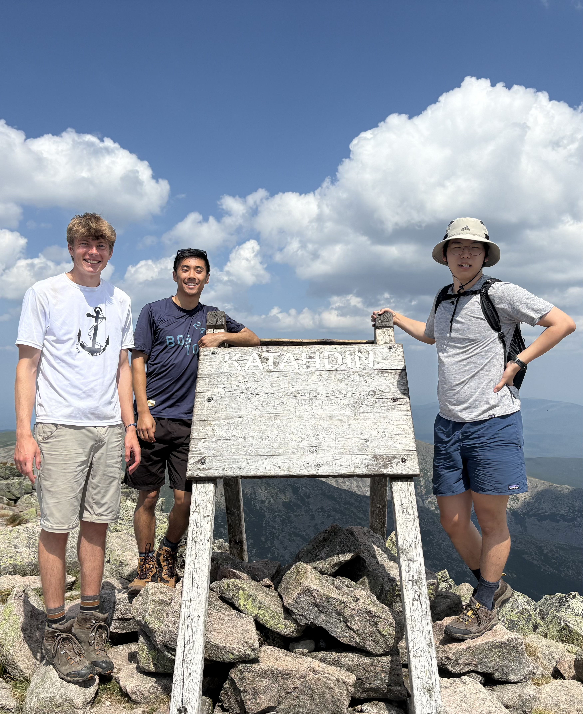
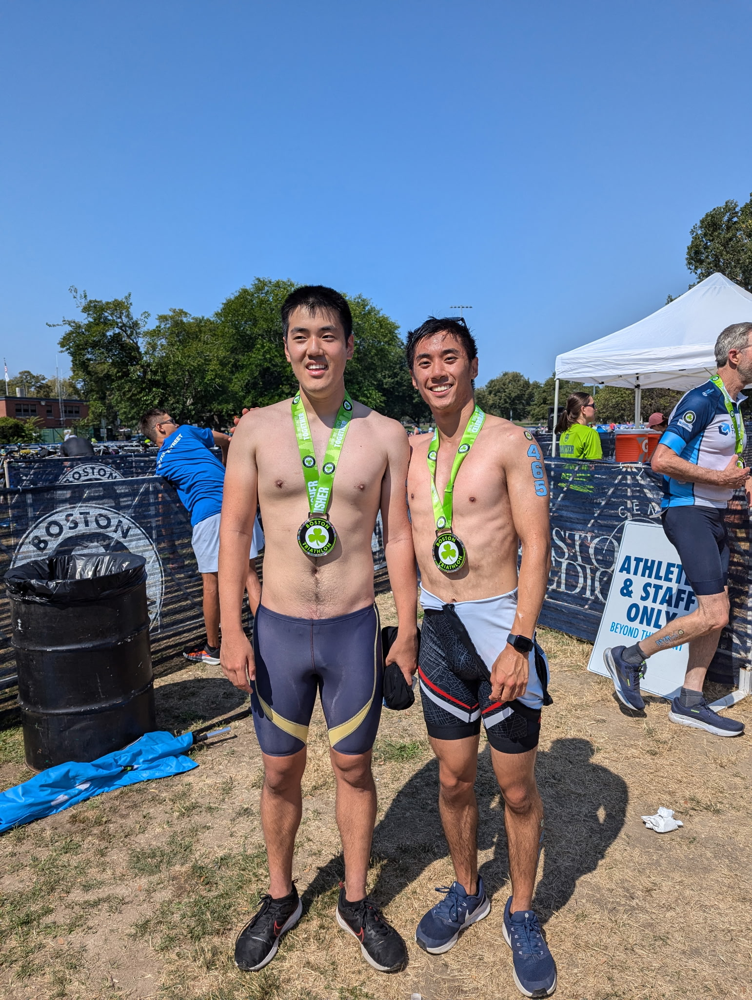
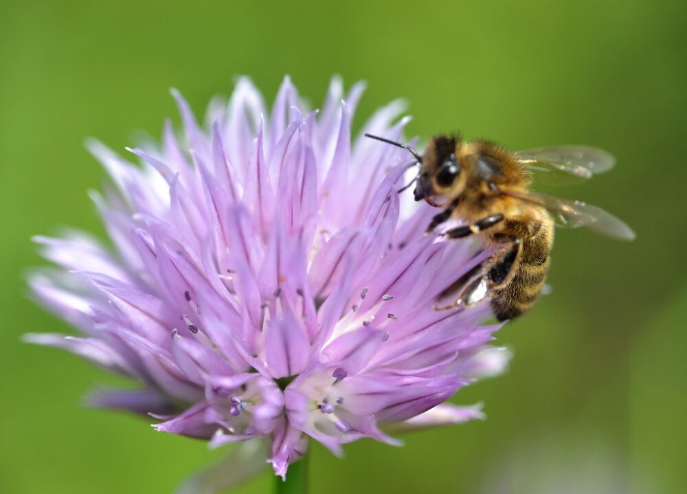

About Me
Some things I enjoy doing outside of research!
Carrying Sheep 🐑

Petting Zoo while interning at Takeda Pharmaceuticals!
Hiking ⛰️

Mt. Katahdin in my home state of Maine!
Triathlons 🏊♂️🚴♂️🏃♂️

2025 Boston Triathlon with my little brother! I usually do a sprint or Olympic triathlon every summer :)
Some of my favorite articles that I wrote for Northeastern's Science Magazine:
Genetic programming: How machine learning is evolving to solve math problems
In 1859, Charles Darwin published his groundbreaking theory of evolution in “On the Origin of Species,” introducing natural selection...
Making AI more “human”: A conversation with Northeastern AI professor Lawson Wong
What is “intelligence”? Large language models like ChatGPT have showcased an impressive ability to generate human-like responses...
Trials of the Golden Fleece: What bees must overcome when collecting pollen

Contrary to our peaceful perception of the humble bee, foraging for pollen can be a treacherous journey...